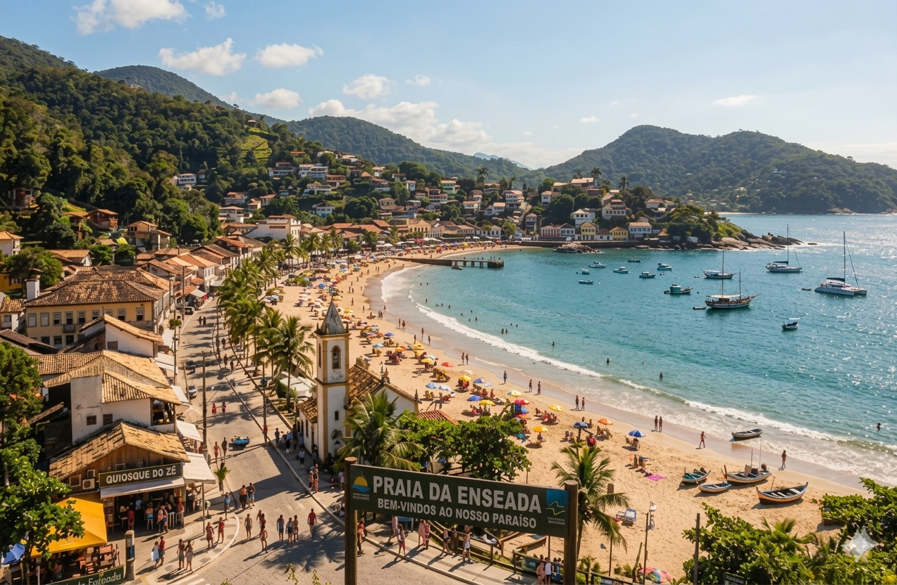
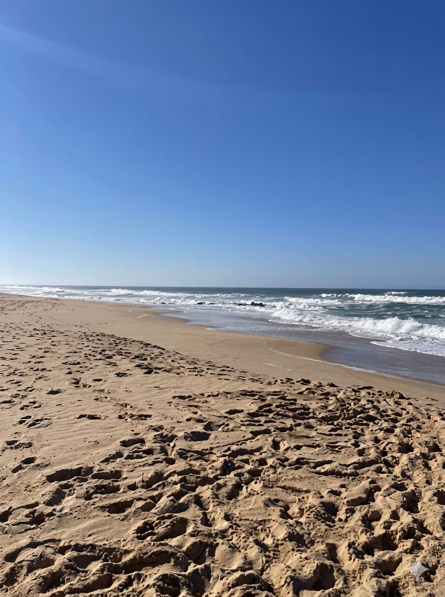
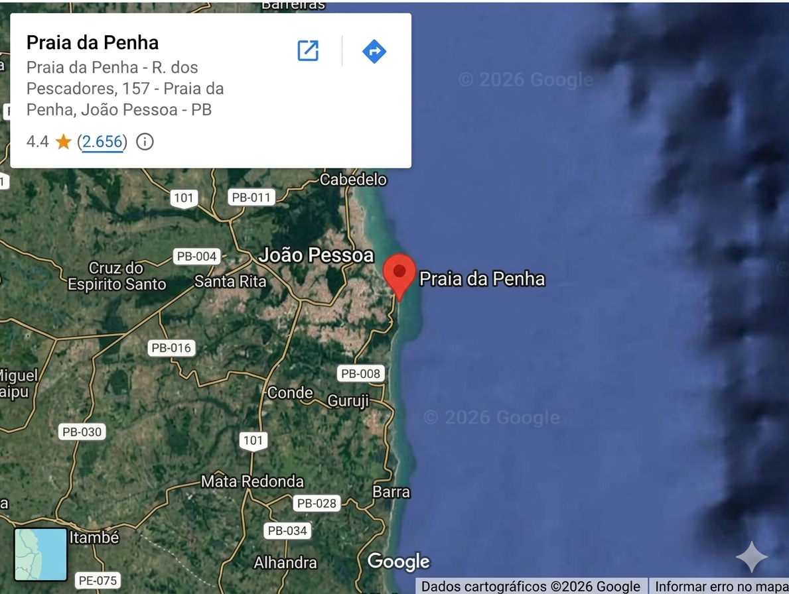

Porto Sereno é uma cidade litorânea conhecida por suas praia tranquilas, seu centro historico charmoso e uma gastronomia que combina tradição e frutos do mar. Neste guia, você encontrará as principais atrações, informações práticas e recursos de mídia para planejar sua visita.
Use os atalhos para navegar: Atalho · informações Praticas · Mapa.
A cidade oferece experiências para todos os perfis de viajante, desde quem busca sossego á beira-mar até quem prefere explorar a cultura local. A seguir, destacamos os pontos imperdíveis.
A Praia da Enseada é o cartão-postal da cidade, com águas calmas e faixa de areia extensa. É ideal para famílias e para a prática de esportes aquáticos leves.

O período da manhã costuma ser o mais tranquilo. Dica: chegue antes das 9h para garantir um bom lugar na areia. Observação: em feriados prolongados, a lotação aumenta bastante.
O centro histórico preserva construções do século XIX e abriga cafés, ateliês e a antiga Igreja Matriz. A praça central mede cerca de 2 500 m2 e é um ótimo ponto de encontro ao entardecer.
Alguns passeios guiados exigem ingresso. Note que houve reajuste recente de preços: o passeio de barco,
que custava R$ 80 R$ 95, agora inclui também uma parada extra na ilha vizinha.
A tabela a seguir resume os valores e horários (bloco pré-formado para preservar o alinhamento):
Passeio Preço Horários ------------------------------------------------------------- Passeio de Barco R$ 95,00 09h · 13h ·16h City Tour Histórico R$ 45,00 10h · 15h Trilha do Mirante R$ 30,00 09h · 14h Museu Municipal R$ 20,00 09h as 17h
Central de Informações Turísticas
Avenida Beira-mar, 1200 — Centro
Porto Sereno
Atendimento diário das 8h ás 18h.
Assista a um breve vídeo da nossa praia, hospedado em nosso próprio servidor:

